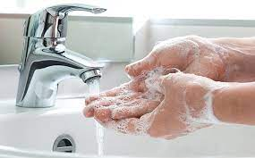
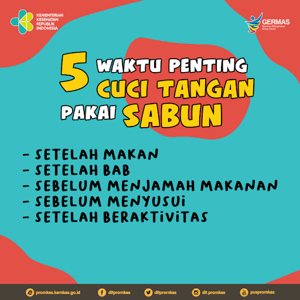

Salah satu perilaku hidup bersih dan sehat (PHBS) yang selalu digaungkan sejak lama untuk menjaga kesehatan dan kebersihan dengan mencuci tangan. Perilaku ini seharusnya menjadi kebiasaan yang sangat baik, karena selain untuk menjaga kesehatan dan kebersihan, agama juga mengajarkannya.
Pandemi COVID-19 memberikan pengingat yang jelas bahwa mencuci tangan adalah salah satu cara paling sederhana untuk mencegah penyebaran virus bersama dengan langkah-langkah kesehatan masyarakat lainnya seperti menjaga jarak fisik, menghindari tempat ramai, mempraktikkan etiket batuk, dan memakai masker di mana pun dan memastikan hasil kesehatan yang lebih baik secara keseluruhan. Cuci Tangan Pakai Sabun adalah perilaku sederhana, namun memiliki dampak luar biasa dalam pencegahan penyakit menular.
Mencuci tangan pakai sabun terbukti mengurangi risiko penyakit diare dan pernapasan. Namun, kepatuhan mencuci tangan
pada saat-saat kritis misal, sebelum makan dan sesudah buang air besar) di banyak bagian dunia jauh dari ideal.
Menggunakan sabun dan air mengalir adalah cara efektif untuk mencuci tangan. Sayangnya, orang seringkali
menggunakan sabun yang terlalu sedikit saat mencuci tangan mereka. Jika menggunakan sabun cair,
gunakan sabun hingga seukuran uang koin.
Lalu ratakan sabun tersebut ke seluruh tangan agar kotoran dan virus terangkat.
Tetaplah mencuci tangan dimanapun Anda berada
 